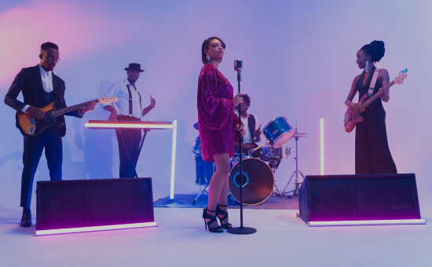
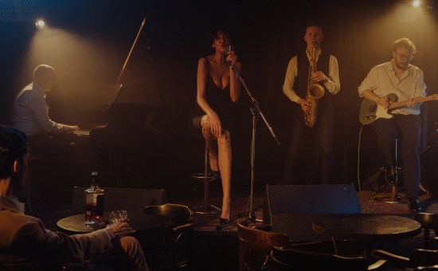

最新活動
-
Cicada新專輯《棲居 在溪源之上》專輯募資開跑邀請樂迷一同親身走進山林
01-31 10:00 am,2022-08-27「以往大家對爬山的認知總是以山頭來定位，似乎走入山林的過程就是，出發、登頂、下山，但若我們從溪的角度切入，便能連結起山與山之間的谷地；當我們不以登頂爲目標，就能更深刻地體會山林。」 Cicada 在過去這段時間，透過悠緩的步調
-

靈魂沙發釋出新單曲〈Goodbye Caroline〉 為年末小巡迴暖身
01-31 10:00 am,2022-08-27關於新歌〈Goodbye>2022 年，疫情過後的世界，終於又重新運轉。然而有些事情卻早已悄然改變，對於靈魂沙發 SoulFa 來說，便是如此。他們決定離開舒適圈，用音樂記錄起現階段的內心迷惘，以及梳理每個當下所做出的選擇。關於新歌〈Goodbye Caroline〉，樂團想要表達的是「告別很難」這件事情。儘管嘴上說出了再見，但心裡卻還沒能實現。而多半的時間，是在分開以後，仍持續排練這件事，才知道這是一場告別不了的告別。他們期許〈Goodbye Caroline〉能成為每個人心中，面對生命中必然的分別時，最美好的陪伴與祝福。
-

讓 Jazz 在台中發酵Forest Night爵士鋼琴三重奏之夜
01-31 10:00 am,2022-08-27慢擴大。目前的學生都是真心喜歡爵士而主動學習的人；接下來，音樂教室也訂定了新的目標：幫助學生組團、教他們如何練團以及創作、幫助大家向外發展、並讓他們體驗站上舞台的感覺，藉由與爵士的更多對話來獲得成就感。
熱門 TOP20-排行榜
- 1. Takao Rock打狗祭匯聚法蘭、魏嘉瑩、琳誼等多組藝人新作演出
- 2. 麋先生迎來成軍10週年演唱會「WE 我們的十年」 重返高雄預告將首唱新曲
- 3. 韋禮安釋出「THE FIRST TAKE」版〈如果可以〉 成台灣首位登上該日本頻道歌手
- 4. 康士坦、血肉、美秀擔綱壓軸 「2022 臺北音樂不斷電」三日、15團演出週末登場
- 5. 大嘻哈時代冠軍YoungLee發布首支單曲〈Young YoungLee〉 Multiverse主腦Macdella擔綱製作
- 6. 彷彿王家衛電影中的場景 ─ 造訪「法蘭黛樂團」主唱 Fran 的房間
- 7. The Next Big Thing 大團誕生（開發場 2）@Legacy Taipei
- 8. 一切從頂樓開始 — 造訪 ECHO 回聲主唱吳柏蒼的房間
- 9. 沒有才能最新EP《日出時間 5:05》 邀Everydaze、Sōryo、蔣馬林擔任製作人
- 10. 太暈了吧！好樂團與李玖哲驚喜合作 新歌〈遊蕩的人〉MV由劉立執導
- 11. 睽違6年 Phum Viphurit重返貴人散步音樂節
- 12. 民生電氣聯手五樓製作 DJ QuestionMark領軍在衛武營舞台上派對
- 13. 繼睽違近20年的台語新作〈無情我抵著閣較無情个妳〉 小安再獻上彩蛋新曲〈愛是我的〉
- 14. 獨立音樂類實境紀錄片《登台之路》、《大嘻哈時代》入圍第57屆電視金鐘獎！
- 15. 美秀集團新歌〈戀⼈〉MV邀李英宏主演：「讓我想起在拍〈台北直直撞〉的感覺。」
- 16. 沈安釋出〈不稀罕別人給的完整／狂奔〉MV 烈日下扛「發呆至尊寶」拍攝慘中暑
- 17. 我是機車少女舉辦「27 歲成熟點」小巡迴 預告演出後將釋出第四張EP的新單曲
- 18. 饒舌歌手五木釋出最新單曲〈漂〉MV 告別過往走過江湖荒唐路的自己
- 19. 芒果街老爸發布新歌〈JuJu〉 透過小女孩的悲劇反思戰爭
- 20. 「舊愛新歡——古詩詞音樂創作徵選」 邀請金曲評審陣容加碼獎金